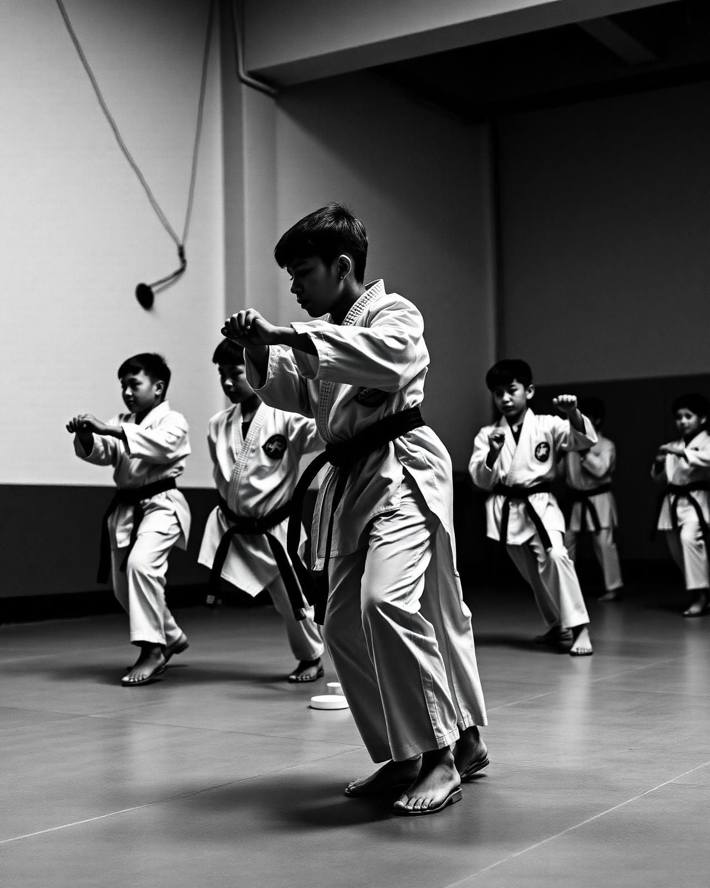
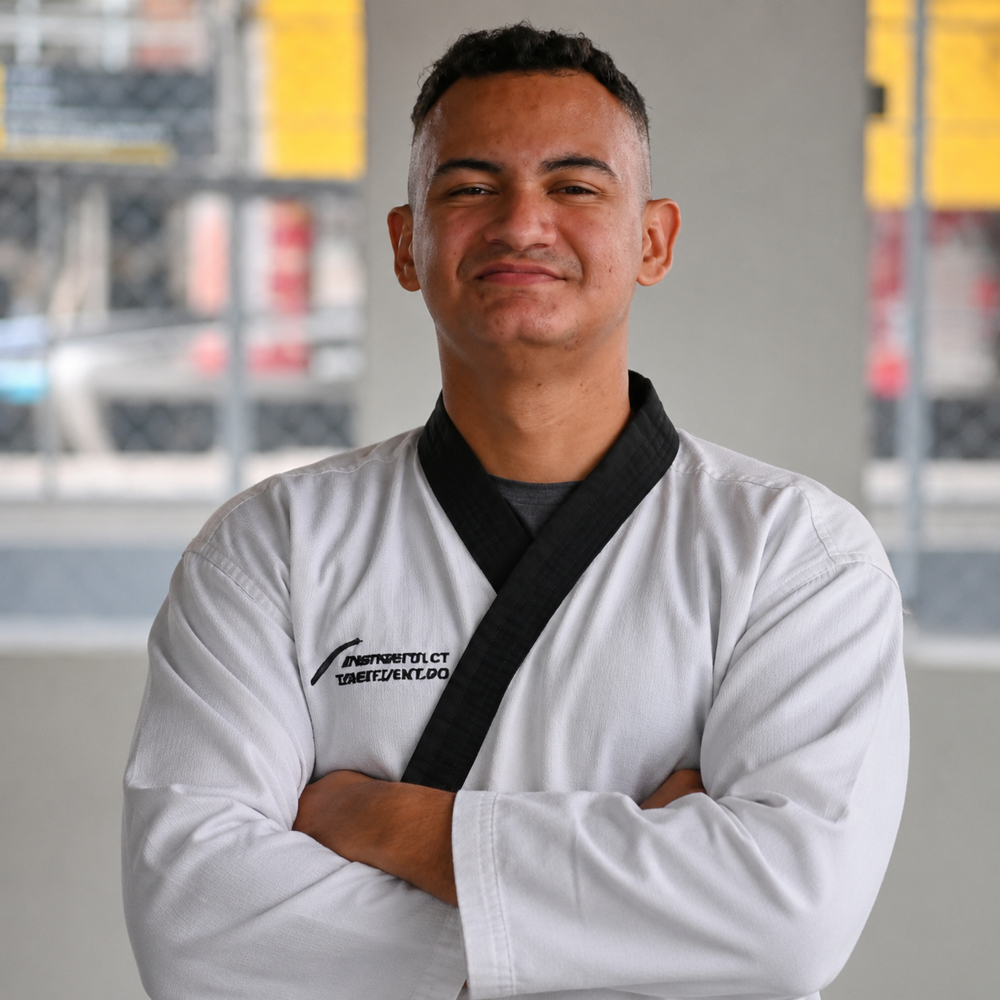
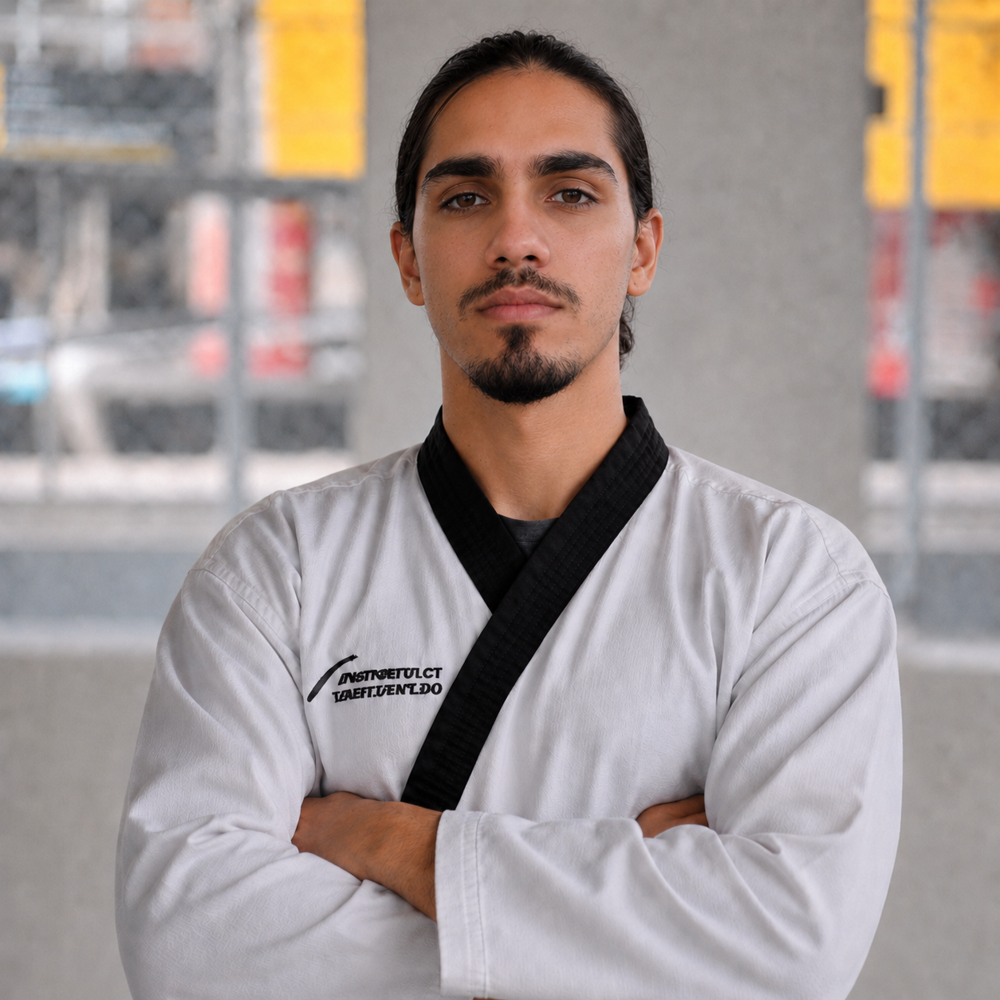

WORLD MUSA TAEKWONDO
Projeto social gratuito de Taekwondo para crianças, adolescentes e jovens da comunidade, com treinos no Centro da Juventude.
- 01 Justiça
- 02 Integridade
- 03 Perseverança
- 04 Auto-Controle
- 05 Espírito Indomável
SOBRE
O NÚCLEO

World Musa Taekwondo
O World Musa Taekwondo no Centro da Juventude é um núcleo de formação esportiva, disciplina e desenvolvimento humano.
Os treinos são gratuitos e abertos à comunidade, oferecendo a adolescentes e jovens a oportunidade de vivenciar o Taekwondo como prática de respeito, foco, saúde, autocontrole e superação.
EQUIPE
TÉCNICA

Mestre responsável
Jay Machienzle
Mestre responsável pela condução técnica e filosófica do núcleo, representando a tradição World Musa e a formação de atletas com disciplina, respeito e espírito indomável.

Professor do núcleo
Nicolas Sampaio Pinheiro
Professor à frente dos treinos no Centro da Juventude, atuando diretamente com adolescentes e jovens da comunidade no desenvolvimento técnico, físico e humano por meio do Taekwondo.
HORÁRIOS
DE TREINO
Técnica & Fundamentos
16:00 — 17:00Combate & Condicionamento
16:00 — 17:00
LOCAL
📍
Clique para vizualizar a LOC no Google Maps
↗
Treinos gratuitos, abertos à comunidade, com foco em disciplina, desenvolvimento físico, defesa pessoal, respeito e formação cidadã.
ESPALHE!!!
Compartilhe o projeto com famílias, jovens e pessoas da comunidade que possam se beneficiar dos treinos gratuitos de Taekwondo no Centro da Juventude.
Local
Centro da Juventude
Quando
A partir de 29/06/2026
Segundas e quartas · 16:00 — 17:00
Segundas e quartas · 16:00 — 17:00
Instagram
@worldmusatkdacre
Link copiado!